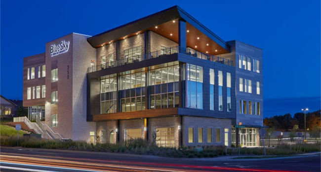
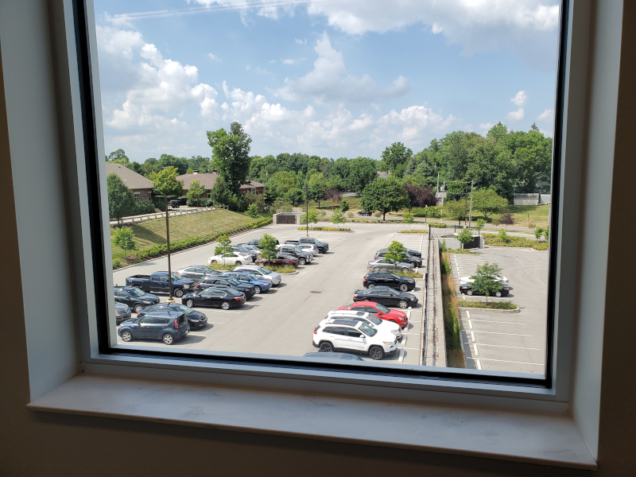
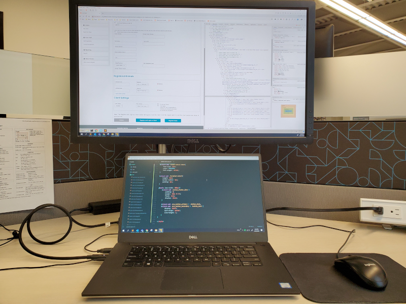
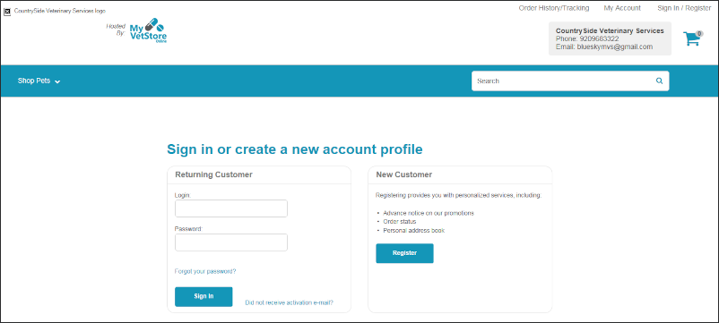

BlueSky
2020-05-05

Company
BlueSky is a professional services company that provides a full range of business strategy, technology, marketing, and talent acquisition services to partners worldwide.
They are known for their eCommerce solutions built on the Java-based HCL Websphere platform.
Role

The Midwest Vets: My Vet Store ecommerce project was started in the beginning of April 2019. Internally known as MVS.
I was brought onboard in the middle of July as the primary Senior UI Developer to help with the workload.
I used Visual Studio Code to rewrite HTML, CSS, and Bootstrap code to fix the existing front-end JSP-based views making them responsive and ensuring they adhered to the design compositions.
These views were originally built by the back-end Java programmers for functionally.
Team
There were many talented people in the office working on other projects.
The company encouraged employees to be efficient with their time and work independently on projects. Technically, I was part of the Creative Team.
They had a diverse remote team of about 10 back-end Java programmers working on the MVS project. My manager created the design compositions and would occasionally step in and work on tasks due to the workload and time limits.
When I had problems with my Laptop, Virtual Machine, the Eclipse toolset, or some dynamic Java code.
I would reach out to my manager or one of the back-end Java programmers for help.
Technology

The company loaned me an Android phone and a Windows 10 laptop with the following software:
- Microsoft Office 360.
- Microsoft Teams.
- Adobe Photoshop and Illustrator for minor image editing.
- Git for development and testing.
- JIRA for tickets and tracking hours.
Virtual Development Environment
- VMware Workstation Player to run the client's Windows 7 virtual machine.
- Eclipse pre-installed on the VM to compile and run the MVS project through a built-in web server.
- VSCode. Which I installed on the VM for code editing.
Project

Midwest Veterinary Supply is like the Amazon.com of the veterinary world. They offer bulk supplies to thousands of veterinary clinics all across the country.
The ambitious goal of this 14 month "My Vet Store" project. Was to give Midwest Veterinary Supply's clients the ability to build and manage their entire clinic using this eCommerce platform.
Everything from managing store supplies, employee's hours, client and pet information. To local store marketing and sales. As well as, giving pet owners the ability to create online accounts with their local clinic to make appointments and track their pet's health.
Unfortunate End
Due to the rise of COVID-19 and internal company politics I was let go on May 5th 2020.
I had planned on staying with the company for the foreseeable future.
This was only few months before the MVS project was scheduled to be completed. As far as I know the project is still not finished.
While I was disappointed by this turn of events.
I value the opportunity I was given to learn and grow as a developer.